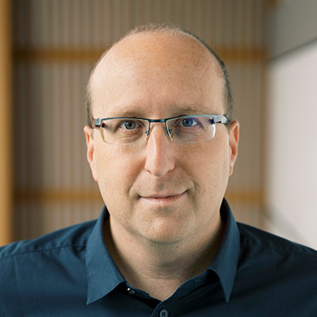

People · Profile

Michael Yartsev, Ph.D.
Principal Investigator · Professor of Neurobiology & Engineering · HHMI Investigator
Michael Yartsev is a Professor at UC Berkeley and an Investigator of the Howard Hughes Medical Institute. He received his B.Sc. and M.Sc. in Biomedical Engineering from Ben-Gurion University and his Ph.D. in Neuroscience from the Weizmann Institute, where he worked with Nachum Ulanovsky. He subsequently completed postdoctoral training as a C.V. Starr Fellow at the Princeton Neuroscience Institute with Carlos Brody.
His research focuses on the neuroscience of natural intelligence: the neural solutions that support the remarkable abilities animals naturally possess. His laboratory uses natural behavior as an experimental window into these mechanisms, combining neuroethology, neurotechnology, and NeuroAI to uncover general principles of brain function. Bats provide an especially powerful model because their natural repertoire includes demanding three-dimensional navigation, dexterous flight, rich social interaction, and other behaviors that expose neural computations that are difficult to access in more conventional preparations. His laboratory therefore follows the scientific question across brain systems involved in navigation, memory, movement, social interaction, and beyond, while developing the experimental and computational tools needed to study these mechanisms with precision.
Awards & Honors
- 2026The Guggenheim Fellowship Research Award
- 2026Miller Professorship
- 2025The Richard Lounsbery Award
- 2024Boehringer Ingelheim FENS Research Award
- 2022Young Investigator Award, Society of Neuroscience
- 2022Peter Gruss Young Investigator Award
- 2022Cajal Club Cortical Explorer Award
- 2022AAA Early - Career Investigator Award - C. J. Herrick Award in Neuroanatomy
- 2021Early Career Award, Society of Social Neuroscience
- 2020Vallee Foundation Scholar Award
- 2020Bakar Faculty Fellow Award
- 2020Brain Science Technology "Rising Star Award", Mahoney Institute of Neuroscience (MINS), UPenn
- 2020Office of Naval Research Young Investigator Award
- 2019Janett Rosenberg Trubatch Award from the Society of Neuroscience
- 2017Packard Fellowship
- 2017Air Force Office of Scientific Research
- 2017Brain Research Foundation
- 2017McKnight Scholar Award
- 2017Alfred P. Sloan Research Fellow
- 2017NYSCF-Robertson Investigator Award
- 2016NIH Director's New Innovator Award (DP2)
- 2016NIMH Biobehavioral Research Award for Innovative New Scientists (BRAINS) - Declined
- 2016Klingenstein-Simons Fellowship Award in the Neurosciences
- 2016Pew Scholar Award
- 2016Searle Scholar Award
- 2016Human Frontiers Research Grant
- 2015David Mahoney Neuroimaging program - Dana Foundation
- 2015The Brain Initiative EAGER award from the National Science Foundation
- 2015Allen Brain Institute Next Generation Leaders Program
- 2015The Raymond Sackler fund for convergence research
- 2015Konishi Neuroethology Research Award, International Society of Neuroethology
- 2014Sieratzki Prize for Advances in Neuroscience
- 2014ISEF International Post-Doctoral Fellowship
- 2013Eppendorf & Science Prize for Neurobiology - Grand Prize Winner
- 2013Donald B. Lindsley prize in Behavioral Neuroscience, Society of Neuroscience
- 2013ISEF Lily Safra Award for Scientific Research
- 2013The John F. Kennedy PhD Distinction Award
- 2013ISEF International Post-Doctoral Fellowship
- 2012ELSC Brain Sciences Postdoctoral Fellowship
- 2012Young Investigator Award, International Society of Neuroethology
- 2012Capranica Prize, International Society of Neuroethology
- 2012ISEF International Post-Doctoral Fellowship
- 2012CV Starr Fellowship, Princeton University
- 2012FENS/IBRO travel grant award. FENS-forum, Barcelona, Spain
- 2012Katzir Foundation travel award
- 2011Best Poster award at the ISFN (Israeli Society of Neuroscience) annual meeting
- 2010National institute for Psychobiology travel award
- 2010Best Poster award Janelia Farm conference on "Bottom-up and Top-down Approaches to Understanding Circuits Processing: Meeting in the Middle"
- 2010FENS/IBRO travel grant award. FENS-forum, Amsterdam, Netherlands
- 2010Otto Schwartz academic excellence award
- 2009Lev-Zion Excellence predoctoral fellowship
- 2009Otto Schwartz academic excellence award
- 2008M.Sc degree with distinguished excellence (summa cum laude)
- 2008Academic excellence award from the ISEF foundation
- 2007Kreitman foundation fellowship for PhD studies - declined due to moving to Weizmann institute
- 2007Zlotowski center for neuroscience travel award
- 2007Best Poster award at the third international computational motor control workshop
- 2007B.Sc degree with distinguished excellence (magna cum laude)
- 2006Academic excellence award from the ISEF foundation
- 2004Academic excellence award from the department of Industrial Engineering
- 2004Bank Hapoalim academic excellence award
- 2004The Ben-Gurion University student body award for voluntary excellence